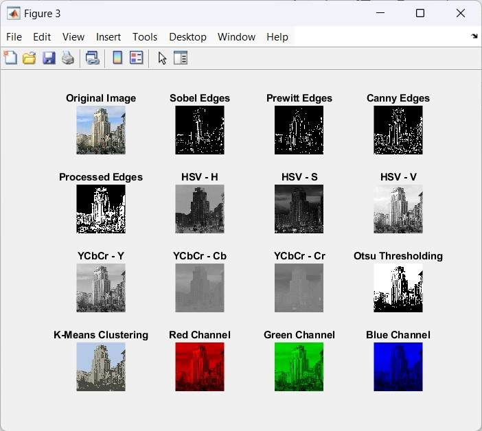
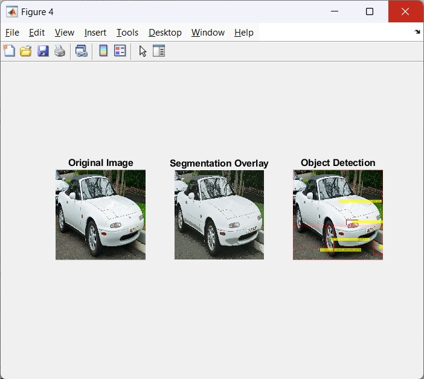
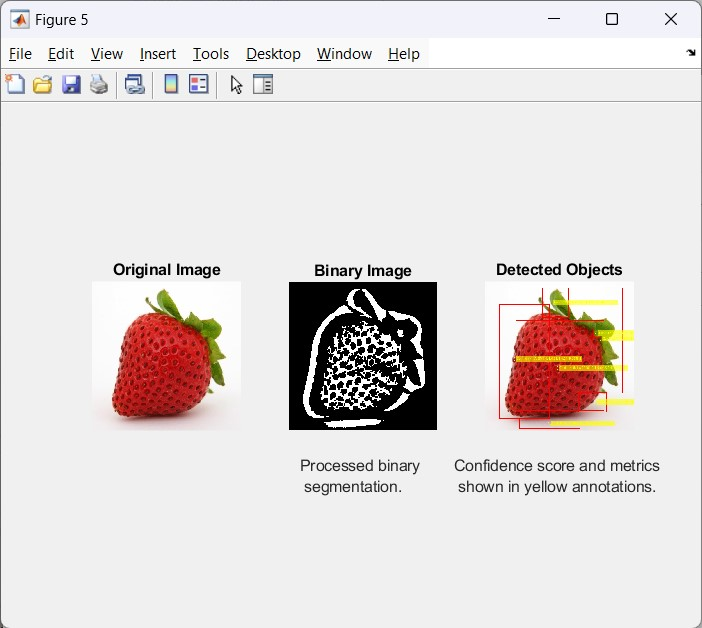
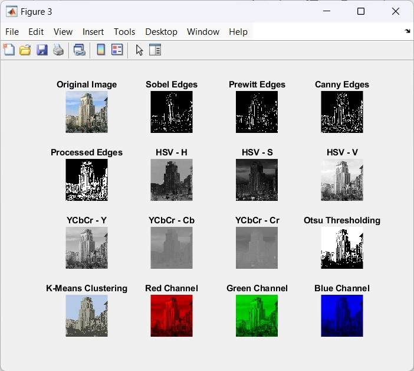
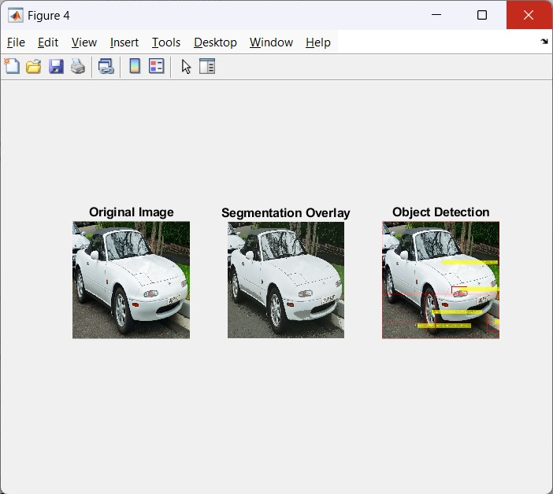
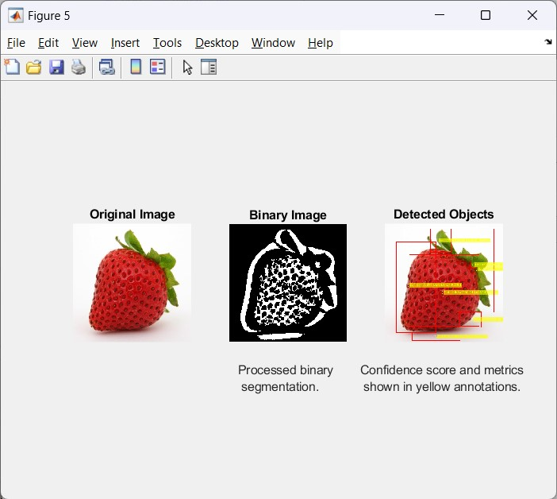

Image Processing and Classification

Academic Project | Manila, 2025
Project Overview
This project implements a full image processing and classification pipeline using MATLAB. The system performs preprocessing, segmentation, feature extraction, and classification to distinguish between different image categories. Multiple color spaces, clustering techniques, and texture-based features were used to improve accuracy and robustness.
Tech Stack
- Language: MATLAB
- Techniques: Image preprocessing, segmentation, clustering
- Algorithms: K-Means, GLCM, SVM
- Tools: MATLAB Image Processing Toolbox
Key Features
- Developed a preprocessing pipeline for noise removal, resizing, and color-space conversion.
- Implemented segmentation using HSV, YCbCr, RGB thresholds, and edge detectors (Sobel, Canny).
- Applied connected component analysis to detect and isolate objects in an image.
- Extracted features using K-Means clustering and GLCM texture metrics.
- Trained an SVM classifier to identify and categorize images (e.g., indoor vs. outdoor scenes).
Results
The system successfully differentiated image categories with consistent clustering patterns and strong SVM classification performance. Feature extraction using GLCM significantly improved discrimination between textured and smooth regions, while multi-color-space segmentation allowed more accurate object isolation.
Project Gallery
 




